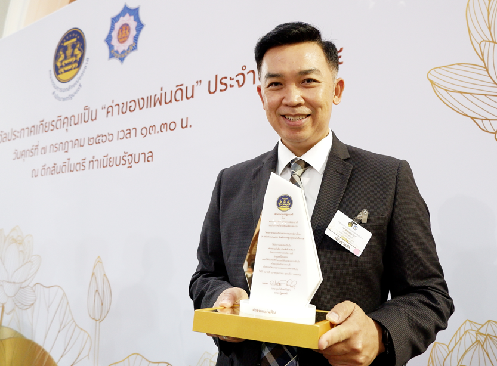
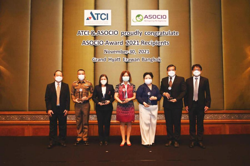
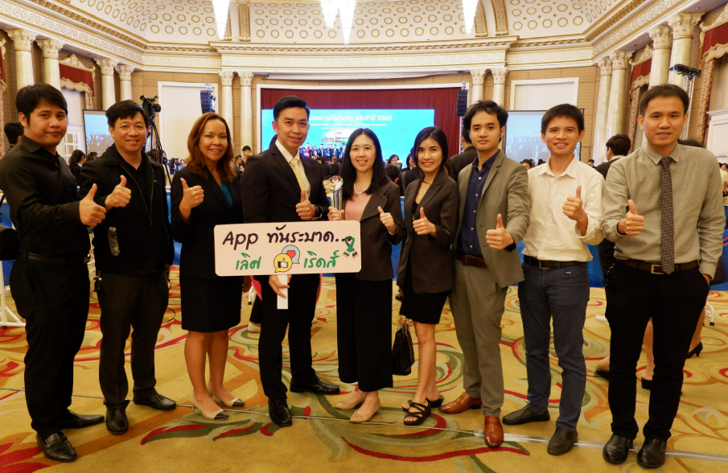
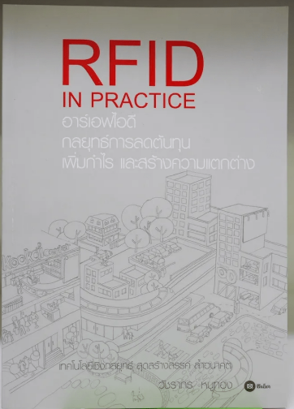
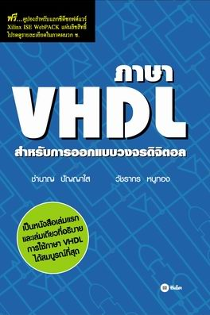

ผู้ออกแบบและพัฒนาแพลตฟอร์มการแพทย์ดิจิทัลระดับชาติที่มีผู้ใช้งานกว่า 6 ล้านคน และผู้เชี่ยวชาญด้าน Advanced IC Design, RFID/NFC และนวัตกรรมเทคโนโลยีเพื่อสุขภาพ
นักวิจัยและหัวหน้าทีมวิจัยนวัตกรรมและข้อมูลเพื่อสุขภาพ สวทช. (NSTDA) ด้วยประสบการณ์กว่า 20 ปีในการวิจัยและพัฒนาระบบสมองกลฝังตัว (Embedded Systems) เทคโนโลยีการสื่อสารไร้สายระยะสั้น (RFID/NFC) และการออกแบบวงจรรวมระดับสูง (High-Level IC/FPGA Design)
ในปัจจุบัน มุ่งเน้นการปฏิรูประบบบริการสุขภาพของประเทศไทยผ่านแพลตฟอร์มดิจิทัล เช่น A-MED Care และ DMS Home ward ซึ่งช่วยให้คนไทยเข้าถึงบริการการแพทย์ได้อย่างทั่วถึงและมีประสิทธิภาพ
สถาบันเทคโนโลยีพระจอมเกล้าเจ้าคุณทหารลาดกระบัง (2542)
มหาวิทยาลัยนเรศวร (2537)
ความเชี่ยวชาญเฉพาะทางที่ผสานทฤษฎีทางฟิสิกส์ การออกแบบฮาร์ดแวร์ดิจิทัลขั้นสูง และการพัฒนาซอฟต์แวร์ระดับประเทศ
ความเชี่ยวชาญด้าน VHDL, High-Level Synthesis สำหรับ FPGAs/ASICs และ HDL tools การออกแบบและทดสอบวงจรประมวลผลสัญญาณจีพีเอส (GPS/GNSS)
การวิจัยและออกแบบสายอากาศ RFID/NFC เครื่องอ่านเขียนอาร์เอฟไอดี (RFID Reader) ย่านความถี่สูงและต่ำตามมาตรฐาน ISO 15693, 11784/85, 14443
การบริหารโครงการและการพัฒนาแอปพลิเคชันบนสมาร์ทโฟน/แท็บเล็ต ระบบปฏิบัติการ Android และ iOS รวมถึงการออกแบบ UX/UI และการทำ Mobile Testing
การวิจัยพัฒนาแพลตฟอร์มเทคโนโลยีการแพทย์ทางไกล (Telehealth) ระบบข้อมูลสุขภาพปฐมภูมิ และการเชื่อมโยงระบบข้อมูลสาธารณสุขระดับประเทศ
ผลงานวิจัยและการออกแบบแพลตฟอร์มระบบสุขภาพดิจิทัลเพื่อประชาชนทั่วประเทศ
แพลตฟอร์มหลักภายใต้โครงการ "30 บาทรักษาทุกที่" เพื่อดูแลผู้ป่วยสิทธิบัตรทอง ณ ร้านยาคุณภาพ คลินิกพยาบาล คลินิกเวชกรรม และคลินิกแพทย์แผนไทย เชื่อมโยงระบบบริการปฐมภูมิทั่วประเทศ
แพลตฟอร์มเปลี่ยนบ้านเป็นเตียงโรงพยาบาลสำหรับดูแลผู้ป่วยในโรคทางกาย 7 กลุ่ม และโรคทางจิตเวช/สารเสพติด 3 กลุ่ม พัฒนาร่วมกับกรมการแพทย์ และ สปสช.
ระบบการดูแลรักษาทางไกลในช่วงวิกฤตการแพร่ระบาดโควิด-19 ร่วมกับ สปสช. กรมการแพทย์ และสำนักอนามัย กทม. รองรับการประเมินอาการ ส่งยา และดูแลทางไกล
สมาร์ทโฟน/แท็บเล็ตแอปพลิเคชันสำหรับเกษตรตำบล ใช้งานร่วมกับเครื่องอ่านบัตรประชาชน Smart Card และวาดขอบเขตแปลงเกษตรบนแผนที่ดาวเทียม
2559 - 2561ระบบแอปพลิเคชันรวบรวมข้อมูลสำรวจลูกน้ำยุงลายและพิกัดภูมิสารสนเทศเพื่อระบุพื้นที่เสี่ยงโรคไข้เลือดออก ได้รับรางวัลสภาวิจัยแห่งชาติ (วช.) ปี 2562
2559 - 2561ระบบแนะนำการดูแลสุขภาพและจัดทำแผนการดูแล (Care plan) สำหรับผู้ดูแลผู้สูงอายุ พัฒนาร่วมกับคณะแพทยศาสตร์ โรงพยาบาลรามาธิบดี
2560 - 2561โปรแกรมบันทึกข้อมูลสุขภาพครอบครัวบน Android และ Tablet พัฒนาร่วมกับกระทรวงสาธารณสุข เพื่อทดแทนระบบกระดาษและเชื่อมข้อมูล JHCIS
2553 - 2555ร่วมออกแบบวงจร RFID tag CMOS 0.35um ร่วมกับ Silicon Craft และออกแบบระบบเครื่องรับสัญญาณ GPS/GNSS ขนาด 12 ช่องด้วย FPGA ร่วมกับวิทยุการบินฯ
2543 - 2552แอปพลิเคชันบน iPad สำหรับช่วยแพทย์บันทึกข้อมูลและสนับสนุนการรักษาผู้ป่วยในในโรงพยาบาลทั่วไป ได้รับรางวัลนวัตกรรมดีเด่นจากกระทรวงสาธารณสุข
2554 - 2555เส้นทางการทำงานและการทุ่มเทวิจัยพัฒนาเทคโนโลยีเพื่อสังคม
นำทัพการวิจัยและพัฒนาแพลตฟอร์มการแพทย์ดิจิทัลระดับประเทศ นำเสนอนวัตกรรมแก้ปัญหาสาธารณสุขในระดับชาติและสร้างเครือข่ายความร่วมมือกับ สปสช. กรมการแพทย์ และหน่วยงานสวทช.
บริหารห้องวิจัยด้านโปรโตคอลการสื่อสาร เทคโนโลยีไร้สาย อุปกรณ์ระบุตัวตนอาร์เอฟไอดี พัฒนาระบบแอปพลิเคชันในระดับองค์กรภาครัฐ
วิจัยพัฒนาระบบซอฟต์แวร์ อุปกรณ์พกพาและระบบระบุพิกัดจีพีเอส/ระบบแผนที่สำหรับงานสาธารณสุขและการเกษตรกรรม
มุ่งเน้นการวิจัย คลื่นความถี่วิทยุ RFID และการออกแบบระบบฮาร์ดแวร์เพื่อรองรับอุตสาหกรรมในประเทศ
วิจัยและพัฒนาชิปอิเล็กทรอนิกส์ RFID และระบบเครื่องรับส่งสัญญาณ GPS ด้วยเทคโนโลยี FPGA และ CMOS
บรรยายวิชาทางวิศวกรรมคอมพิวเตอร์ การออกแบบวงจรรวมดิจิตอลสมัยใหม่ (VHDL และ FPGA) และการประยุกต์ใช้เทคโนโลยี RFID ในเชิงธุรกิจ
รวมรางวัลเกียรติคุณ สิทธิบัตร และผลงานตีพิมพ์ทางวิชาการ

จากสำนักงานปลัดสำนักนายกรัฐมนตรี มอบแด่ระบบบริการทางการแพทย์ทางไกล (A-MED Telehealth) สำหรับการดูแลผู้ป่วยโควิด-19 ด้านส่งเสริมและพัฒนาสาธารณสุข ประจำปี 2565 ณ ทำเนียบรัฐบาล

มอบโดยสมาพันธ์ ASOCIO (Asian-Oceanian Computing Industry Organization) ณ เมืองหลวงธากา บังคลาเทศ จากความสำเร็จในการสร้างระบบดิจิทัลเฮลท์ในระดับภูมิภาค

จากสำนักงานคณะกรรมการวิจัยแห่งชาติ (วช.) มอบแด่ผลงาน "ทันระบาด: ชุดซอฟต์แวร์สนับสนุนการเฝ้าระวังและควบคุมการระบาดของโรคไข้เลือดออก"
รางวัลความดีความชอบสูงสุดภายในศูนย์เทคโนโลยีอิเล็กทรอนิกส์และคอมพิวเตอร์แห่งชาติ (เนคเทค)
จัดโดย Wellcom Mobile ในงาน TGS2011 และรางวัลชนะเลิศ Mobile Application Award 2011 ด้านการออกแบบยอดเยี่ยม ในงาน NECTEC-ACE
เรื่อง "การออกแบบไมโครคอนโทรลเลอร์โดยใช้ FPGA" ณ มหาวิทยาลัยเทคโนโลยีพระจอมเกล้าธนบุรี

กลยุทธ์การลดต้นทุน เพิ่มกำไร และสร้างความแตกต่าง

คู่มือปฏิบัติการการออกแบบวงจรรวมระดับลอจิก
แนวคิดและการประยุกต์ใช้งานเชิงพาณิชย์และอุตสาหกรรม
ร่วมแบ่งปันไอเดีย หรือหารือเกี่ยวกับความร่วมมือในการวิจัยและพัฒนานวัตกรรมเทคโนโลยีเพื่อสุขภาพ ดิจิทัลเฮลท์ และระบบสมองกลฝังตัวระดับสูง
watcharakon.noo@nstda.or.th
02-564-6900 ต่อ 2513 (ที่ทำงาน)
081-907-6960 (มือถือ)
ทีมวิจัยนวัตกรรมและข้อมูลเพื่อสุขภาพ สวทช.
112 อุทยานวิทยาศาสตร์ประเทศไทย ถ.พหลโยธิน ต.คลองหนึ่ง อ.คลองหลวง จ.ปทุมธานี 12120